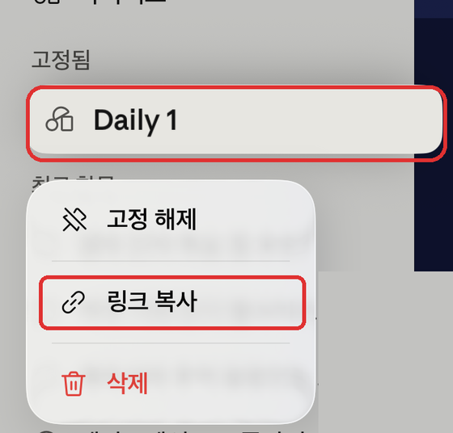
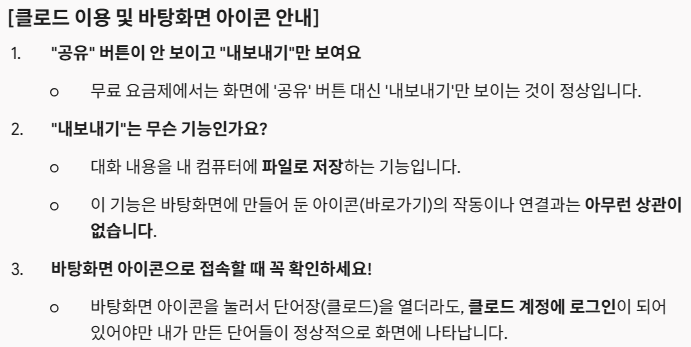
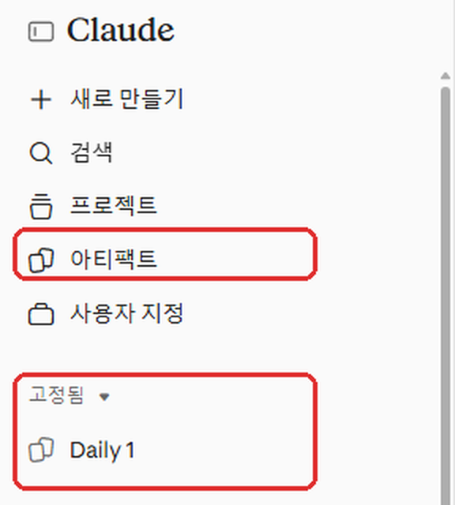

📖 영어 원서 단어장 앱 (무료) - 남약사가 직접 Claude로 만들었어요
원서를 읽다가 페이지를 사진으로 찍어서 모르는 영어 단어를 바로 찾고, 사전·발음·어원·예문 해석까지 자동으로 채워주고, 퀴즈로 복습하는 단어장이에요. 특히 Claude로 문맥에 맞게 라틴어 어원, 슬랭까지 활용해 암기를 도와줘요. 본인의 Claude 계정만 있으면 무료로 쓸 수 있습니다. (별도 앱 설치, 가입비, 서버 필요 없음)
📱 이렇게 써요


📌 준비물
- Claude 계정 (claude.ai, 무료 요금제 가능)
- 위 링크의 HTML 파일
🛠 설치 방법 (3분)
- 위 링크에서 HTML 파일을 (단지 주소가 아니라) 내 기기에 저장해요.
- claude.ai 또는 Claude 앱에서 새 대화를 열고, 저장한 HTML 파일을 첨부해요.
- 아래 문장을 그대로 복사해서 보내요:
💡 클로드에게 보낼 문장 — 오른쪽 위 [복사] 버튼을 누르세요
"첨부한 HTML을 수정하지 말고 그대로 아티팩트로 게시해줘. 사용자별 저장(db), 사용자 식별(user), Claude 호출(sample) 기능을 켜서 게시해줘." - 게시가 끝나면 나오는 카드를 눌러 열어요. ("This artifact uses connectors" (Use Claude) 창이 뜨면 그대로 두고 [Continue]만 누르면 돼요)

이런 창이 뜨면 정상이에요. "Use Claude" 스위치는 켜 둔 채 Continue만 누르세요.
뜻 찾기·번역에 Claude를 쓰겠다는 동의 창이고, 처음 한 번만 나와요. - 자주 쓰려면 바탕화면(홈 화면)에 아이콘을 만들어 두세요. Claude 화면 위쪽의 "내보내기" 버튼이 아니라 브라우저 자체의 메뉴를 써요. 아래 순서대로 따라 해 보세요.
⭐ 가장 쉬운 방법: 링크 복사 → 브라우저에 붙여넣기
- Claude에서 왼쪽 메뉴(☰)를 열어요.
- 고정됨 칸의 Daily 1을 길게 눌러요. (컴퓨터는 마우스 오른쪽 버튼)
- 나오는 메뉴에서 "링크 복사"를 눌러요. (사진의 빨간 칸)
- Safari 또는 Chrome을 열고(Claude 앱 말고!) 주소창에 붙여넣기 해서 이동해요.
- 붙여넣은 페이지에서 내 기기에 맞게 눌러요.
- 🍎 아이폰/아이패드(Safari): 공유 아이콘(네모에 위쪽 화살표) → 목록을 올려 "홈 화면에 추가" → 추가
- 🤖 안드로이드(Chrome): 오른쪽 위 ⋮ 메뉴 → "홈 화면에 추가" → ("설치"가 아니라) "바로가기 만들기" → 추가
- 💻 컴퓨터(Chrome): 오른쪽 위 ⋮ 메뉴 → 캐스팅, 저장, 공유 → 바로가기 만들기... → "창으로 열기" 체크 → 만들기

💡 고정됨에 Daily 1이 안 보이면 아티팩트에서 Daily 1을 열고 고정해 두세요. (Claude 앱이 아니라 Safari/Chrome에서 붙여넣어야 해요.)

사진을 누르면 크게 볼 수 있어요 
아티팩트는 Claude에서 만든 앱·문서가 모여 있는 곳이에요. 빨간 칸의 아티팩트 또는 고정됨 → Daily 1을 누르세요. (휴대폰은 왼쪽 위 ☰ 를 누르면 같은 메뉴가 나와요) 🆘 그래도 안 되면 (아이콘이 Claude 홈으로만 열릴 때)
Claude가 그 주소를 자기 앱으로 가로채서 생기는 일이에요. 이때는 아이콘 대신 이렇게 쓰는 게 가장 쉬워요.
- Claude 홈이 열리면 왼쪽 메뉴(☰)의 고정됨 칸에 "Daily 1"이 있어요.
- 그걸 누르면 바로 단어장이 열려요.
- 고정됨에 안 보이면 아티팩트에서 Daily 1을 열고 고정해 두세요.
💡 주요 기능 설명
- 단어 추가: 영어 단어를 입력하면 뜻, 발음, 라틴어/그리스어 어원, 예문이 자동으로 채워집니다. 발음 듣기 버튼으로 반복해서 들을 수 있어요.
- 사진 번역: 원서 한 페이지의 글자를 복사해서 붙여넣으면 문장별로 한국어 번역이 나와요. 모르는 단어를 누르면 단어 추가 화면으로 바로 이동해요. (아이폰/아이패드: 사진 앱에서 글자를 길게 눌러 복사)
- 퀴즈: 같은 단어를 5번 연속 맞히면 "외운 단어"가 돼요. 위쪽 숫자 카드를 누르면 외운 단어, 복습 중인 단어를 따로 볼 수 있어요.
❓ 자주 묻는 질문 (FAQ)
Q. 정말 무료인가요?
A. 앱 자체는 무료예요. 다만 자동 뜻 찾기, 번역, 어원 기능은 내 Claude 사용량으로 돼요. 무료 요금제는 사용량 한도가 있어서, 한도에 걸리면 잠시 뒤에 다시 써야 할 수 있어요.
Q. 다른 사람과 단어가 섞이나요?
A. 아니요. 내 단어는 내 계정에만 저장되고, 내 기기들(폰, 태블릿, 컴퓨터)에서는 동기화돼요.
Q. 파일을 그냥 열었더니 자동 기능이 안 돼요.
A. HTML 파일을 직접 열면 Claude 기능이 없어요. 꼭 위 설치 방법 ②~④처럼 Claude에서 아티팩트로 게시한 뒤 열어야 해요.
Q. 자동 뜻 찾기가 안 돼요.
A. Claude에게 이렇게 말해보세요: "db, sample, user 기능을 켜서 다시 게시해줘."
Q. 앱이 업데이트되면요?
A. 이쯤이면 완벽하지 않을까 생각하는데 건의사항 알려주시면 제가 업데이트 파일 올리겠습니다.
Q. 왜 남약사는 앱이 아니라 아티팩트로 만들었나요?
A. 가장 큰 이유는 뜻을 Claude가 직접 찾아 주기 때문이에요. 그리고 혼자 만들고 관리하기에도 간단하고, 쓰시는 분께도 부담이 없어요.
- 관용구·숙어도 문맥에 맞게 찾아줘요. 아티팩트는 Claude에게 직접 물어보는 방식이라, 책 속 문장을 보고 그 문장에서 쓰인 뜻을 알려 줘요. 일반 앱으로 따로 만들면 보통 무료 사전 데이터를 가져오는 방식이라, 사전에 정확히 있는 단어만 찾고 관용구나 숙어는 대부분 못 찾아요. 어원 풀이와 문장 번역도 같은 이유로 가능해요.
- 설치·가입이 필요 없어요. 앱스토어 등록이나 심사, 서버 운영 없이 Claude 계정만 있으면 바로 열어서 써요.
- 내 단어는 내 계정에만 저장돼요. 제가 만든 서버에 단어가 모이지 않아서, 제가 다른 분의 단어를 볼 수 없어요.
- 비용 걱정이 없어요. 뜻 찾기·번역은 쓰는 분 각자의 Claude 사용량으로 돼요. 제가 많은 분의 사용료를 대신 낼 수 없어서, 이 방식이 누구에게나 무료로 열어 드릴 수 있는 방법이에요.
- 고치기 쉬워요. 건의사항이 있으면 제가 Claude와 함께 바로 고쳐서 새 파일로 올릴 수 있어요.
대신 "아티팩트"라는 낯선 말과 처음 한 번의 설치 과정이 있어요. 그래서 위에 사진과 함께 가장 쉬운 방법을 적어 두었어요. 어려우시면 편하게 물어봐 주세요.

— 남약사 (010-9980-7582)